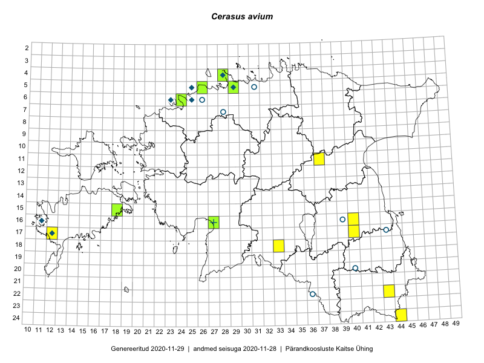

Cerasus avium
Uuendatud: 2016-12-01
Kaardile koondatud taksonid: Cerasus avium L.

Kaart põhineb 7 kirjel.
Viited andmebaasikirjetele
- Karin Kikas, Elle Rajandu: 2015-05-14: 16-40: GPS punkt
- Mari Reitalu: 2015-10-26: 17-12: GPS punkt
- Olav Renno: 2016-05-18: 18-33: GPS punkt
- Eeva-Maria Jeletsky, Tarmo Niitla: 2016-06-09: 11-37: ala
- Eeva-Maria Jeletsky, Tarmo Niitla: 2016-06-09: 11-37: GPS punkt
- Eeva-Maria Jeletsky, Tarmo Niitla: 2016-06-09: 11-37: GPS punkt
- Tiina Elvisto: 2015-08-09: 04-28: ala